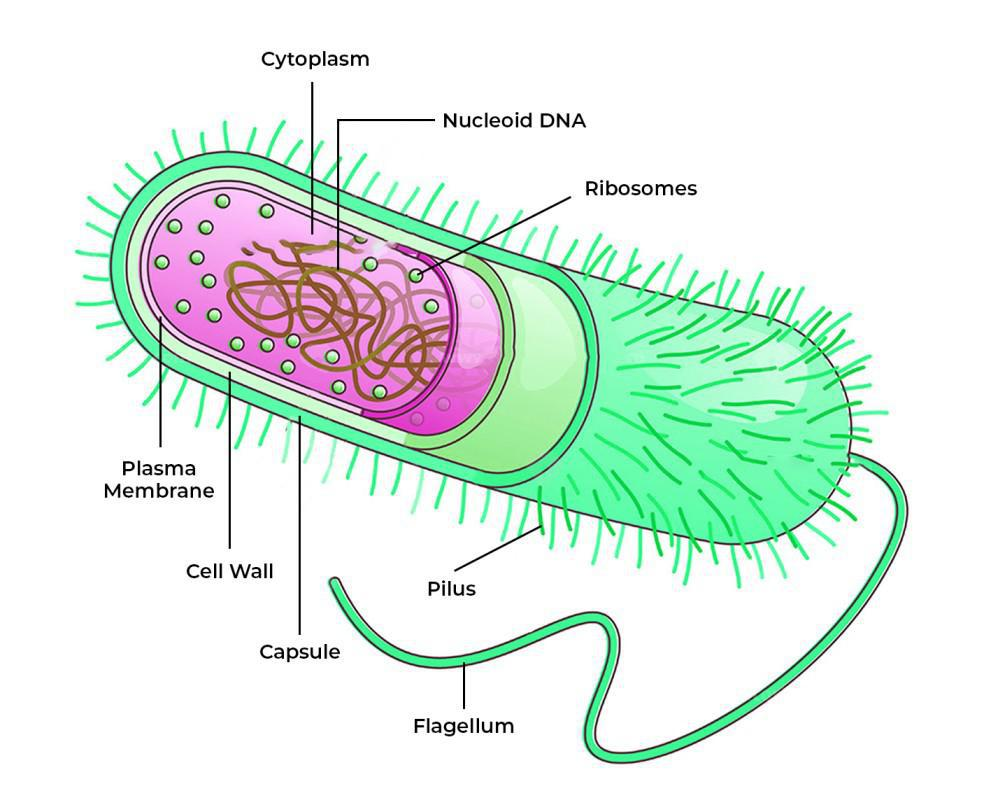

Bacteria

Bacteria are single-celled microorganisms belonging to the domain Bacteria. They are among the most abundant and diverse organisms on Earth, inhabiting virtually every environment, from soil and water to the human body and extreme habitats such as hot springs and deep-sea vents. Bacteria play essential roles in nutrient cycling, decomposition, symbiotic relationships, and biotechnological applications.
Key Characteristics
- 1. Prokaryotic Structure: Bacteria are prokaryotic organisms, meaning they lack a distinct nucleus and membrane-bound organelles. Their genetic material is contained in a single circular chromosome located in the nucleoid region of the cell
- 2. Cellular Morphology: Bacteria exhibit a wide range of shapes and sizes, including spheres (cocci), rods (bacilli), spirals, and filamentous forms. Some bacteria form multicellular aggregates or colonies with specialized functions.
- 3. Metabolic Diversity: Bacteria possess diverse metabolic capabilities, allowing them to utilize a wide range of substrates for energy and growth. They can be aerobic (requiring oxygen) or anaerobic (thriving in the absence of oxygen) and can metabolize organic and inorganic compounds.
Classification
Bacteria are classified into several phyla based on their genetic and biochemical characteristics:
- Proteobacteria: This diverse phylum includes many of the most well-known bacteria, such as Escherichia coli, Salmonella, and Vibrio cholerae. Proteobacteria are found in diverse habitats and include many pathogenic and symbiotic species.
- Firmicutes: Firmicutes encompass a wide range of bacteria, including Bacillus, Clostridium, and Staphylococcus. They are known for their ability to form endospores and include both beneficial and pathogenic species
- Actinobacteria: Actinobacteria are characterized by their filamentous growth and include important genera such as Streptomyces, which produce antibiotics, and Mycobacterium, which includes the causative agent of tuberculosis
Habitat and Adaptations
Bacteria inhabit diverse habitats and exhibit various adaptations:
- Soil: Bacteria are abundant in soil, where they contribute to nutrient cycling, organic matter decomposition, and soil fertility. Some soil bacteria form symbiotic relationships with plant roots, providing nitrogen fixation and other benefits.
- Water: Aquatic environments such as oceans, lakes, rivers, and wetlands harbor diverse bacterial communities that play critical roles in nutrient cycling, carbon sequestration, and water quality.
- Hosts: Many bacteria live as symbionts or pathogens in the bodies of plants, animals, and humans, where they can have significant effects on host health and physiology.
Ecological and Economic Importance
- Nutrient Cycling: Bacteria play crucial roles in nutrient cycling, breaking down organic matter and recycling nutrients such as carbon, nitrogen, and phosphorus in ecosystems
- Bioremediation: Certain bacteria have the ability to degrade pollutants and contaminants in the environment, making them valuable for bioremediation of polluted soil, water, and air.
- Food Production: Bacteria are used in various food production processes, including fermentation (e.g., yogurt, cheese, sauerkraut), food preservation (e.g., pickling, curing), and flavor enhancement (e.g., umami).
Conservation Challenges
Bacteria face threats from habitat destruction, pollution, climate change, antimicrobial resistance, and emerging infectious diseases. Conservation efforts focus on preserving natural habitats, reducing pollution, promoting sustainable land management practices, and developing strategies to combat antimicrobial resistance.
Bacteria, with their immense diversity, ecological significance, and economic value, are integral components of terrestrial and aquatic ecosystems. Understanding and conserving these microorganisms is essential for maintaining ecosystem health, human well-being, and the sustainability of natural resources.